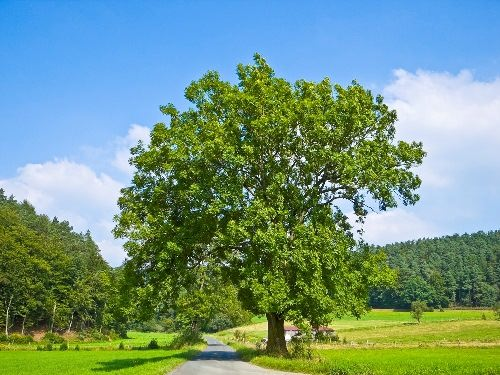
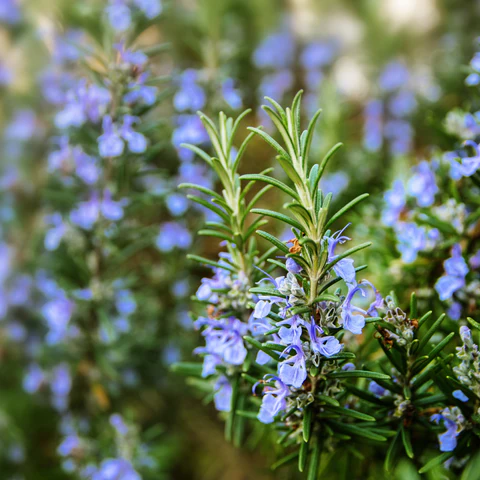
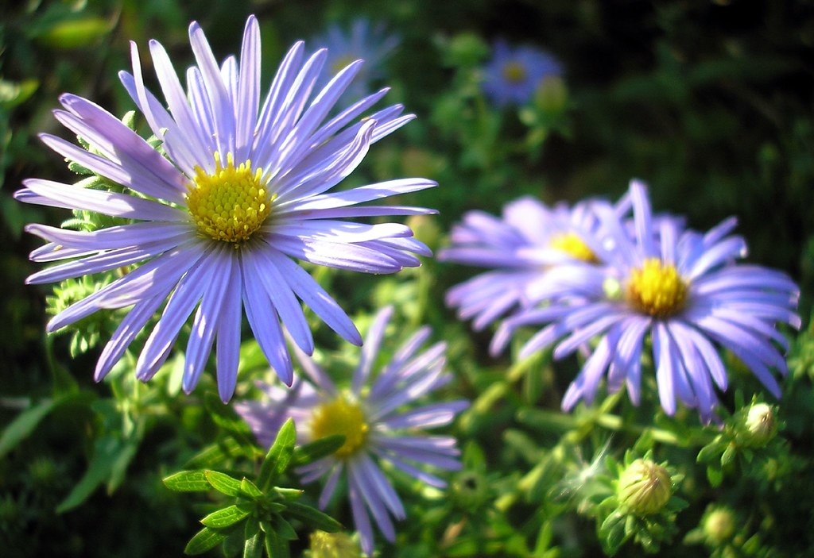
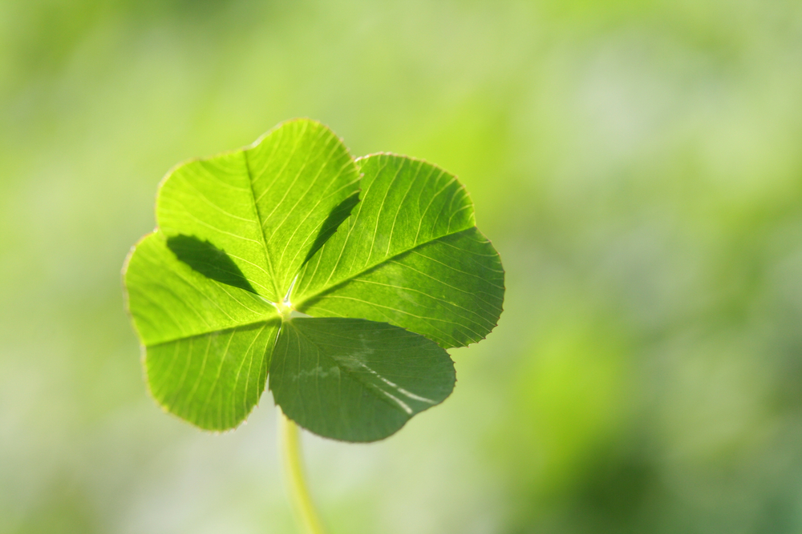
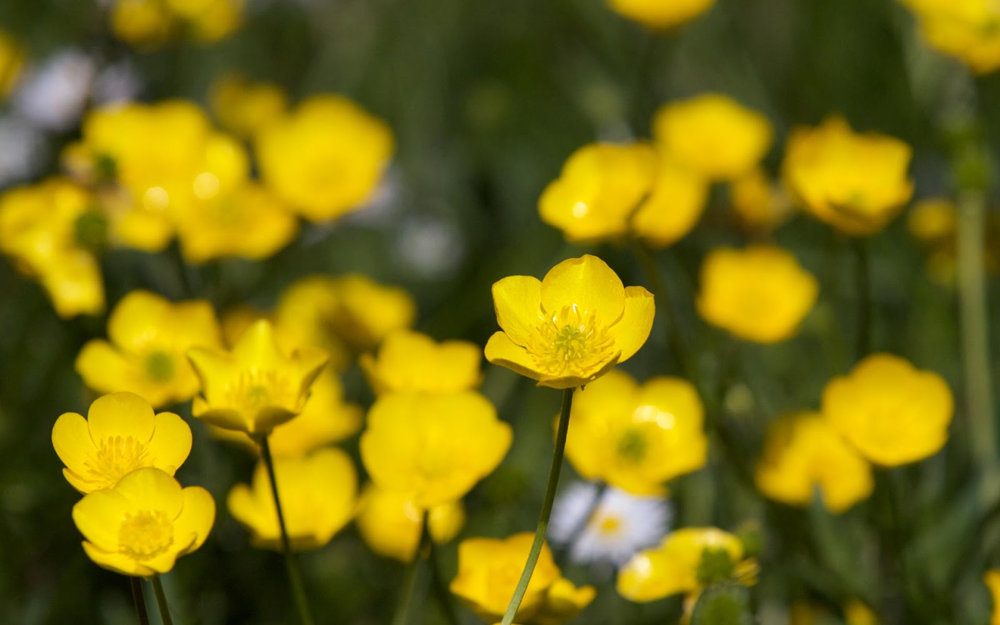

<!DOCTYPE html>
<html lang="en">

<!--website title and link to css-->
<head>
    <meta charset="UTF-8">
    <title>S Plants</title>
    <link rel="stylesheet"  type="text/css" href="../CSS/styleplants.css">
</head>       
</html>

<!--web page title-->
<header>Plants</header>

<!--navigation bar-->
<nav>
    <ul class="a">
        <li><a href="Irish Wildlife.html">Home</a></li>
        &nbsp;&nbsp;&nbsp;&nbsp;&nbsp;
        <li><a href="Search Animals.html">Search Animals</a></li>
        &nbsp;&nbsp;&nbsp;&nbsp;&nbsp;
        <li><a href="featuredanimals.html">Featured Animals</a></li>
        &nbsp;&nbsp;&nbsp;&nbsp;&nbsp;
        <li><a href="About Us.html">About us</a></li>
        &nbsp;&nbsp;&nbsp;&nbsp;&nbsp;
        <li><a href="Archives.html">Archives</a></li>
        &nbsp;&nbsp;&nbsp;&nbsp;&nbsp;
        <li><a href="Contact Us.html">Contact</a></li>
        &nbsp;&nbsp;&nbsp;&nbsp;&nbsp;
        <li><a href="Sitemap.html">Site Map</a></li>
    </ul>
</nav>

<!--main content-->
<main>
    <section>

        <!--introduction to web page-->
        <p id="introduction">
            On this page, we are going to explore the greenery of Ireland, from trees, to herbs, and flowers!
        </p>

        <!--title of plant-->
        <h3>Ash Tree</h3>

        <!--image of an ash tree-->
        <p id="ash">
            
        </p>

        <!--information about the ash tree-->
        <p class="paragraph">
            The ash tree is the most common tree among forests, this tree can grow in many different types of soil and
            it prefers when the soil is less watery. Ash trees can be found in the Burren in County Clare.<br><br>
            These trees grow up to 40 metres tall  which makes them the tallest trees in Ireland, they are the first trees 
            in Ireland to bloom and the first to lose all its' leaves in Autummn. <br><br>
            The pale wood of the ash tree is used to make hurleys for hurling, an Irish sport. 
        </p>
        <br><br>

        <!--title of plant-->
        <h3>Rosemary</h3>

        <!--image of a rosemary bush-->
        <p id="rosemary">
            
        </p>

        <!--information about rosemary-->
        <p class="paragraph">
            <br>
            Rosemary is one of the herbs that grow in the wild, but you can also grow it at home if you are into gardening and
            have a passion for herb picking. Rosemary has leaves that have the appearance of small needles, when blooming, it has
            blueish, pink, purple and sometimes white flowers. <br><br>
            When growing rosemary, it prefers a light soil and likes to be awayfrom the sun.
            Once planted, it can take a while to see it grow, about 2 or 3 months. As they are stubborn herbs, there is only a 15%
            chance it will successfully grow.
            <br><br>
           <br> Rosemary also has many health benefits, it has antioxiant effects and helps with arthiritis. Many people, like myself, use
            a rosemary oil to help with hair growth.
        </p>
        <br>

        <!--title of plant-->
        <h3>Sea Aster</h3>

        <!--image of a sea aster-->
        <p id="aster">
            
        </p>

        <!--information about a sea aster-->
        <p class="paragraph">
            <br>
            The sea aster is a beautiful native wildflower flowering along coastlines and harbours. This flower is very adaptable
            and doesn't need much soil to grow, which is why sometimes you can see it flowering on a cliff face or even in the sand.
            <br><br>
            These flowers bloom in early June to July and stop in October. This is a perennial flower, meaning it comes back for multiple
            years during flowering months.<br>
            The appearance of this flower is blueish purple and has a bright yellow middle.
        </p>
        <br><br><br><br>

        <!--title of plant-->
        <h3>Shamrock</h3>

        <!--image of a shamrock-->
        <p id="shamrock">
            
        </p>

        <!--information about shamrocks-->
        <p class="paragraph">
            The national 'flower' of Ireland, the shamrock is a clover. In an old Irish Legend; it is believed that St.Patrick used the
            shamrock as concept of the Trinity, meaning three people in one God. 
            <br><br>If you ever find a four leaf clover, consider yourself lucky as four leaf clovers are extremely rare. 
            It is said that only 1 in 10,000 clovers have four leaves.
            <br><br>
            These shamrocks typically bloom from spring to autumn, like most plants.
        </p>
        <br><br><br><br><br>

        <!--title of plant-->
        <h3 id="cup">Meadow Buttercup</h3>

        <!--image of a buttercup-->
        <p id="buttercup">
            
        </p>

        <!--information about buttercups-->
        <p class="paragraph">
            <br>
            Meadow buttercup is a pretty wildflower commonly found in grassy areas, they flower in late spring but it may vary on the climate
            it grows in. <br><br>
            The stem of the flower can grow up to 80 centimetres tall and when blooming, the show their glossy yellow petals.
            The meadow buttercup is a highly adaptable flower, it grows on roadsides, in forests, meadows, and grassy banks.
            <br><br>
            Although it is a pretty looking flower, it is toxic to animals and can cause internal irritiation. However, bees are
            attracted to this flower for pollination.
        </p>
        <br><br><br><br>    
    </section>
</main>
